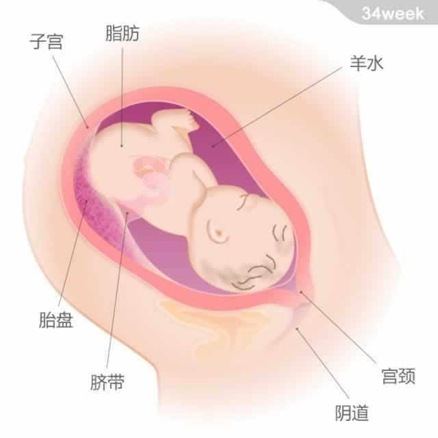

 宝宝的重量约为2.55千克，从头部到臀部的长度约为32厘米。 现在，宝宝的一对肾脏已经发育完全。他的肝脏可以代谢一些废物。消化系统在这个阶段也已发育成熟。因为肺部已经完全发育，所以此时出生的宝宝有99%可以存活，并很少会出现呼吸方面的问题。 宝宝的体重在接下来的几周里还会继续增加，子宫内的空间越发显得拥挤，宝宝已经不太可能做“漂浮”或翻跟斗的动作了。他伸展和扭动身体时，会用胳膊肘、腿部或四肢把你的肚子顶出一个凸起。此外，宝宝的睡眠变得更加规律。